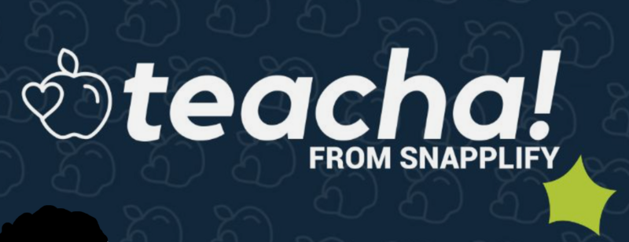

Future-proof professional skills for the Applied AI Era.
Forget abstract theory. We amplify the expertise of African professionals with practical, intelligent tools that make work better, faster, and safer.
The Philosophy
Work smarter, not harder.
Your 24/7 Expert Assistant
AI isn't about robots replacing humans—it's about intelligent tools amplifying your expertise. Think of it as a highly capable colleague that helps you write reports, analyze data, and solve problems 24 hours a day. It learns patterns and provides suggestions, freeing you to focus on the human decisions that matter.
Zero Coding Required
You don't need to be "tech-savvy" to succeed here. Our approach assumes you are an expert in your field, not in software. We start with practical tools you can use immediately.
Better, Faster, Safer
Whether you are a nurse streamlining patient notes or a tradesperson quoting a job, AI helps you reduce errors, save costs, and create more time for the work you love.
Our Initiatives
Democratising Knowledge
We are bridging global digital knowledge with African realities through three interlinked initiatives.
Stratedge Publishing
The home of practical, inclusive guides distributed via Amazon KDP, Snapplify, and the African Books Collective. We make high-level knowledge accessible to everyone.
Stratedge Academy
A collaborative consortium of educators, health workers, and tradespeople co-creating learning resources. We ensure content is relevant to real African workplaces.
Learning Platform
The digital hub where learners access curated pathways. We ground global AI concepts in local needs, ensuring you are a co-creator of your own future.
Stratedge Pocketbooks
Practical AI guides for African professionals
Each pocketbook has free open-access modules on this site. Select a cover to start learning.


Affiliate Organisations

Ready to transform your professional practice?
Your journey towards more intelligent, efficient, and safer work begins here.
Start Your Journey